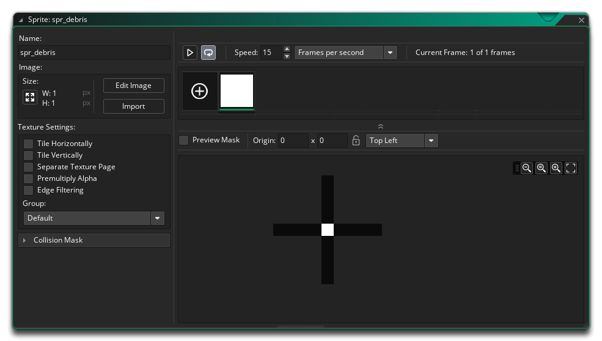
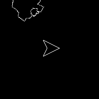

We're going to add a "debris" effect into our game, and not just for the small asteroids, but for whenever any asteroid is destroyed. For that you need to create a new sprite, set it to be a 1x1 pixel only, then colour it white. This will be our debris sprite, so give it an appropriate name like "spr_debris", and then you can close the Sprite Editor, as we don't need to change its collision mask or do anything else.

Now we need to make a new object, called "obj_debris". Create it and name it now, and assign it the sprite you just created, "spr_debris". We'll give this object a Create Event where we'll use the following code to give it a random direction and some momentum:
direction = irandom_range(0, 359);
speed = 1;
We also want to give this object a Step Event, so do that now. In this event we'll make instances of the object fade out and then destroy themselves when they are no longer visible. To do this we'll be working with the image_alpha, which is a built in variable that controls the transparency (alpha) of the sprite assigned to the instance. A value of 1 is fully opaque and a value of 0 is fully transparent, and what we'll have our object do is gradually lower the image_alpha from 1 to 0 with this code:
image_alpha = image_alpha - 0.01;
if (image_alpha <= 0)
{
instance_destroy();
}
This will take a small amount off the image_alpha and when it gets equal-to or below zero, the instance destroys itself. Note that we don't do the check as "if (image_alpha == 0)"! Most numbers in GameMaker Studio 2 are floating point which means they can get minute rounding errors that can accumulate and cause issues with exact "==" checks. In the above case, it may be that the image_alpha value never reaches exactly zero and instead hits a number like 0.0000002, which would then roll over to be -0.0900002 and so never be exactly zero... which is why we check if it's less than or equal to 0. This may seem a bit contrary to common sense, but it's a fact of life when programming!
The final thing to do now is add some code to create these instances when the bullet hits the asteroids, and, just because we can, let's add them into the player object when it hits an asteroid and is destroyed too. So, open up the bullet object "obj_bullet" and in the Collision Event with "obj_asteroid", edit the code so it looks like this:
with (other)
{
instance_destroy();
if (sprite_index == spr_asteroid_huge)
{
repeat(2)
{
var new_asteroid = instance_create_layer(x, y, "Instances", obj_asteroid);
new_asteroid.sprite_index = spr_asteroid_med;
}
}
else if (sprite_index == spr_asteroid_med)
{
repeat(2)
{
var new_asteroid = instance_create_layer(x, y, "Instances", obj_asteroid);
new_asteroid.sprite_index = spr_asteroid_small;
}
}
repeat(10)
{
instance_create_layer(x, y, "Instances", obj_debris);
}
}
Then, open the player ship object "obj_ship" and in its Collision Event with "obj_asteroid", and add the following after instance_destroy():
repeat(10)
{
instance_create_layer(x, y, "Instances", obj_debris);
}
Run the game now, and shoot some asteroids! If all has gone well, then they should explode into smaller asteroids and create a nice puff of debris:

Click the "Next" button to continue...